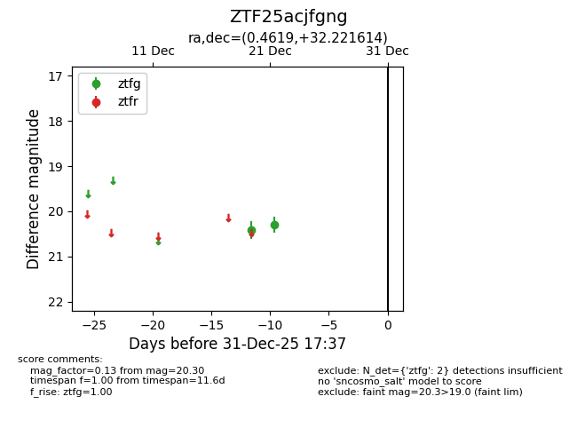
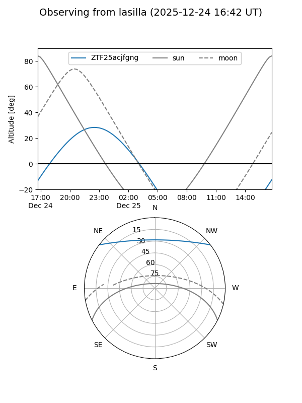
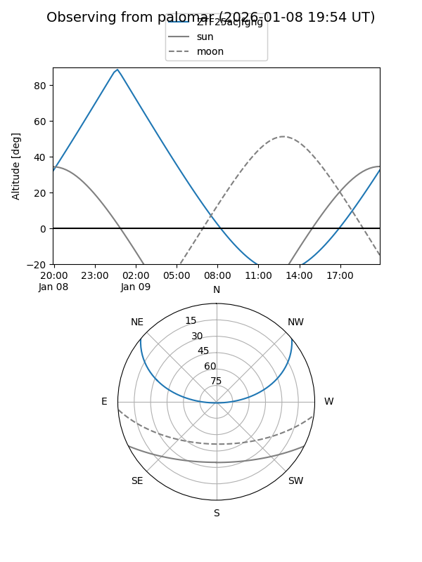

ZTF25acjfgng
Target ZTF25acjfgng at 2025-12-22 14:26
Aliases and brokers:
FINK: fink-portal.org/ZTF25acjfgng
Lasair: lasair-ztf.lsst.ac.uk/objects/ZTF25acjfgng
ALeRCE: alerce.online/object/ZTF25acjfgng
alt names
ZTF25acjfgng (ztf,fink_ztf)
Coordinates:
equatorial (ra, dec) = 0.4619,+32.22161
equatorial (HMS+DMS) = 00:01:50.86,+32:13:17.81
galactic (l, b) = (110.8882,-29.48774)
Flags:
Photometry:
last ztfg=20.30
2 ztfg detections
Lightcurve

Visibility


Additional plots